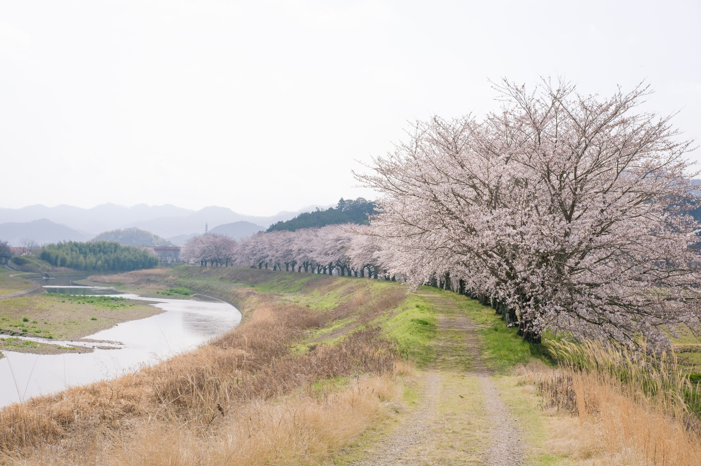
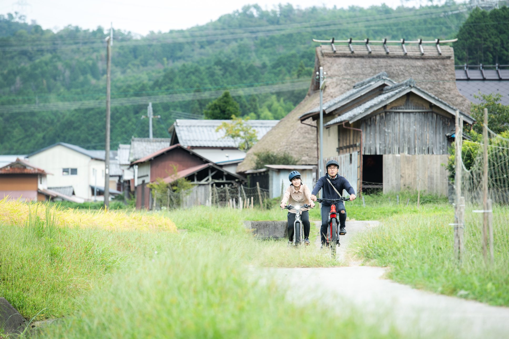
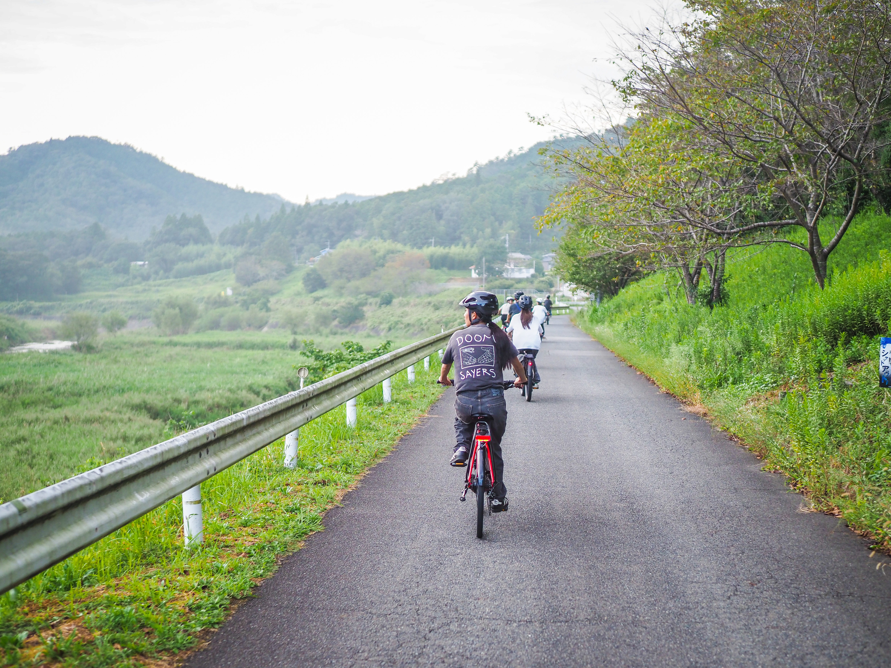

ー丹探ー
誰も知らない
丹波篠山の時間へようこそ
里山、自然、自分たちだけの時間。
あなだけのオーダーメイドツアー。
あなただけの丹波篠山を探す旅をお手伝いいたします。
SCROLL
EXCLUSIVE EXPERIENCE
Guided Tour / 丹探（Tamsaku）
ーあなただけの丹波篠山を探す旅に出かけてみませんか？ー
1組ずつのご案内
丹探（Tamsaku）のツアーは、完全プライベート制。他のお客様に気兼ねすることなく、自分たちのペースで里山の時間をお楽しみいただけます。
オーダーメイドの旅
私たちは定型のルートを辿るだけではありません。お客様の「やりたいこと」をヒアリングし、その日の天候や気分に合わせて最適なルートをご提案。旅の思い出を一緒に作ります。

PRICE & PLAN
ツアー料金・プラン
1グループ（5名様まで）
¥37,500
所要時間：おおよそ半日（午前・午後）
ご希望に合わせてご提案いたします。
ご希望に合わせてご提案いたします。
※ 5名様を超える場合は、1名あたり +¥11,000
※ 通訳が必要な場合は +¥22,000
連泊でのガイドや他の業者様との体験連携もご相談いただけます。
お気軽にお問い合わせください。
MODEL COURSE
モデルコース



ーあなただけの丹波篠山を探す旅に
出かけてみませんか？ー
京阪神エリアからおよそ1時間で非日常へ。
兵庫県の里山、丹波篠山を舞台に旅の新しい時間の使い方を提案致します。